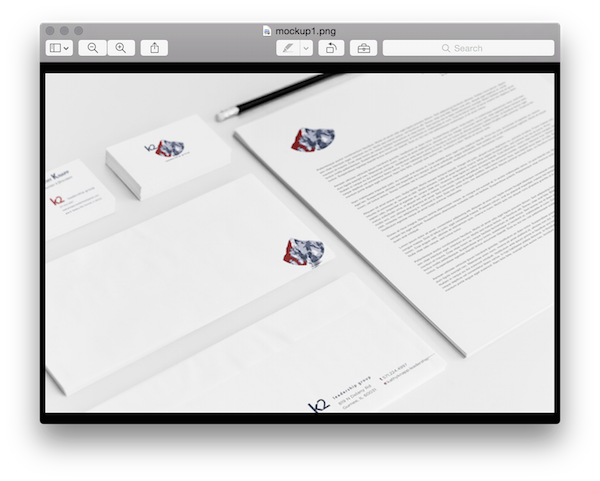
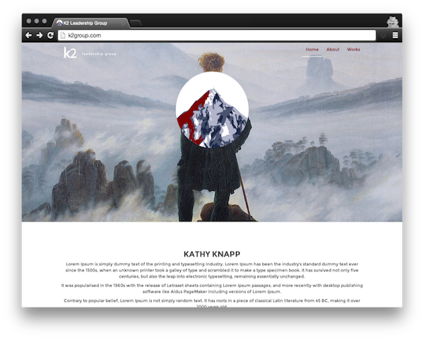

K2 is so named for its founder and CEO Kathy Knapp (2x K), “an executive coach with 30+ years of global experience who combines coaching with leadership tools, resources, and expertise to develop leadership potential in individuals, managers, executives and teams”.
Ms. Knapp served long and distinguished career as an officer the United States Army, where, among her many successful assignments, she was stationed in Pakistan, a time of both personal and professional significance.
The use of K2 then is two-fold, as Pakistan is home to Qogir –known more widely as K2- the second highest mountain in the world, yet it’s most technically challenging. Such a task as scaling K2 requires much the same kind of leadership guidance and tools the K2 Leadership Group looks to provide its clients for their success.
K2 Leadership Group (K2) is an “executive coaching, leader development and organizational effectiveness business”. It is the individual enterprise of CEO Kathy Knapp, who retained me to design brand identity and establish the online presence of K2.
Brand identity and online presence
Branding is very important in Col. Knapps industry. Thus it was not only very important to have a clean and recognizable identity, but as well have it easily applicable to a variety of mediums.
The client preferred customer contact to be personal. A website to manage that interaction would only hinder it, but rather needed to act as an official online representation and draw for contact
The K2 emblem features the image of the mountains final assent, with the colors blue, sky blue, and maroon being used to highlight the difficulties in the endeavor. The logotype -that is, the stylized ‘k’ and ‘2’- evokes the steepness of the climb toward expertise, while the cleft where the two characters meet is to be reminiscent of that cleft where Moses, one of Judeo-Christian history’s greatest leaders, was afforded greater understanding and comfort in his task.
Taken together as logo, or utilized separately as emblem, wordmark, or logotype, the K2 brand identity seeks to convey the core qualities the company offers in its leadership services and are important assets for industry and professional recognition.